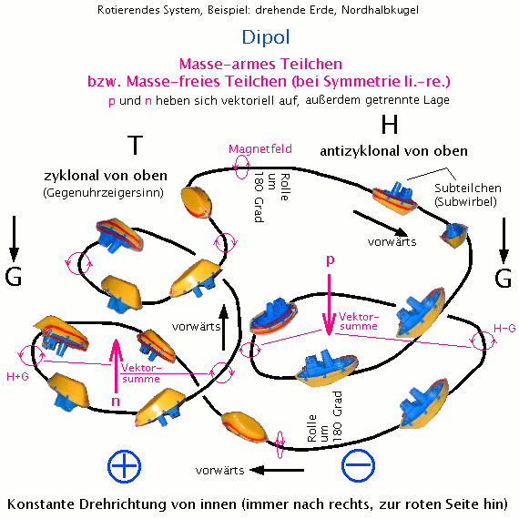

|
Masselose Teilchen Aktueller
Hinweis zur Korrektur (22.12.05): Alte Hypothese: Sie entstehen, wenn das innere H-Feld eine flache geschlossene Struktur bildet, also keine longitunalen Anteile mehr hat: Das H-Feld bildet dann keine Pole, alles ist glatt, und fast ohne Widerstand gleitet das ringspulenförmige Objekt mit Lichtgeschwindigkeit im Äther. Neue Hypothese (Dezember 2005): Sobald
das übergeordnete System am Rotieren ist, - und das sind eigentlich
alle-, bilden sich Verschiebungen zwischen den Positionen der Abwärts-
und der Aufwärts-Spirale.
Eine reine Richtungsänderung der Strömungen in eigenstabilen Systemen kostet aber für meine Begriffe viel zu viel Energie, weil sie mit turbulenter Wirbelbildung (Widerstand) verbunden ist. Anders sieht die Sache aus, wenn an den Magnetpolen (unten, oben) eine gezielte Drehung um die Längsachse des Luftpaketes/Unterwirbels den eigentlichen Richtungswechsel verhindert. Bitte folgendes Bild betrachten:  Abb.2.9 Wie man erkennen kann, sind, trotz gleichsinniger Drehung (Steuerbord ist immer innen im Kreis) im mitbewegten System, die Drehachsen von außen gesehen antiparallel (rote Pfeile). Die "Kernmassen" (beim Atom Proton p und Neutron n) heben sich vektoriell gegenseitig auf und sind als Gesamtmasse unwirksam. Wenn die Anzahl der Substrukturen im H und T verschieden sind, wie hier in der Zeichnung (Anzahl n > Anzahl p bei fast allen Elementen), kann es zu kleinen Differenzmassen kommen, allerdings 'nach oben' wirkend, levitierend. Wir haben einen Dipol vor uns. Das Tiefdruckgebiet ist genau so saugend, wie ein Elektronen-ansaugender Pluspol. Er hat
links im Bild eine 'Außenmasse' G+H, rechts Kräftekompensation
wie beim Torkado außen (G-H). Das wird ihn in Drehung versetzen
und das H wieder über das T bringen. Man sollte mal ausrechnen, ob die Luftmassenbewegung ausreicht, um die Erddrehung in Gang zu halten (habe keine genauen Daten, auch der bremsenden Kräfte). Außerdem kann sich das Ganze im flüssigen Erdkern (wenn es den gibt) wiederholen, mit möglicherweise größerem Effekt. Ist es denkbar, dass Licht erst zu Licht wird, wenn es ein drehendes System erreicht ? Vorher ist es massebehafteter Sonnenwind, natürlich zum Teil mit Lichtgeschwindikeit. Ohne starke Gravitation auf dem Weg haben sie auch keine große Masse. Die Lichtgeschwindigkeit wäre dann nur die Grenze für die allerschnellsten Einzelteilchen - die vielleicht ohnehin schon leichter sind, weil sich ihre 'Mitte getrennt' hat. Man muss vielleicht unterscheiden zwischen 'hartem' Sonnenwind (kalt, np-Kern gut 'verpackt' durch viele Auraschichten), der nur vereinzelt auf der Erdoberfläche detektiert wird, und 'weichem' Sonnenwind, der unten als masseloser Dipol ankommt. Ein Vergleich wie zwischen Hagel und Schnee. Wenn Licht mit dem "Pluspol voran" fliegt, dann hat man wieder eine Erklärung für das extreme Tempo. Es ist das Leydenfrostsche Phänomen, das auch einen Wassertropfen über die heiße Herdplatte schießen lässt. (Oder siehe Lifter). Nichtmaterie, also Äther im Chaos oder wenigstens großer Turbulenz, ist heiß (Ofen). Der Pluspol ist sehr kalt und verliert (geordnete Äther-) Substanz, während er schmilzt/verdampft. Dieser wegschießende Dampf wirkt wie ein Luftkissen und wie ein Düsenantrieb. Normalerweise, in geordneten Verhältnissen, ist der Pluspol innen, im Kern des Torkado, stellt die Drehachse dar und gleichzeitig die Masse, isoliert und gekühlt durch Schicht um Schicht von umkreisenden Ätherströmen (so kühlen die Planetenbahnströmungen die Sonne). Der Glühdraht einer Glühlampe verliert auch mit der Zeit seine Atome. Wie stellt man sich eigentlich vor, wie die Masse da herauskommt aus dem Glas ? Licht ist definiert als etwas, das keine Ruhemasse hat. Man müsste sagen, dass es die sehr wohl früher einmal hatte, aber wegen Ordnungsverlust nie wieder bekommt. Es sei denn, das Photon wird resonant absorbiert von einem ordnungsstarken System, das ihm wieder 'Form und Mitte' gibt. In esoterischen Kreisen nennt man das "Manifestieren". Oder man nennt es Transmutation (Beispiel Lichtnahrung, wobei hier nicht der optische Bereich gemeint ist). Schade nur, dass die Physiklabors, die das Licht untersuchen, von all dem nichts wissen wollen. Weiterer
interessanter Hinweis:
Das rollende EiWir wissen, wie
sich geladene Teilchen im Magnetfeld ablenken lassen. Rollt ein Ei auf
einer schiefen Ebene (Potentialunterschied), biegt es Richtung Ei-Spitze
ab. Liegt diese rechts, entspricht die Bewegung einer anderen 'Ladung',
als wenn sie links liegt.
|
{kind=link}